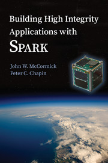

7.10. Examples in the Toolset Distribution¶
Further examples of SPARK are distributed with the SPARK toolset. These are
contained in the share/examples/spark directory below the directory where
the toolset is installed, and can be accessed from the IDE (either GPS or
GNATBench) via the menu item.
These examples range from single subprograms to demo programs with dozens of units. In this section, we describe briefly the code in each example, the properties specified, and the results of GNATprove‘s analysis.
7.10.1. Individual Subprograms¶
These examples contain usually a single subprogram, and are typically very small (a few dozens slocs).
binary_search and binary_search_unconstrained
These programs search for a given value in an ordered array. The postcondition
of the main function Binary_Search expresses that the search is successful
if-and-only-if the array contains the value searched, and if so the index
returned is one at which the array contains this value. GNATprove proves all
checks on these programs. The version with an unconstrained array is the same
as the one presented in the section on How to Write Loop Invariants, and
used in a series of two articles published by Johannes Kanig in Electronic
Design to compare dynamic and static verification techniques (see
http://blog.adacore.com/testing-static-formal).
euclidian_division
This program implements the Euclidian division of two integers Dividend and
Divisor, returning their quotient and remainder in Quotient and
Remainder respectively. The postcondition of procedure Linear_Div
expresses the expected mathematical relation between inputs and
outputs. GNATprove proves all checks on this program.
gcd
This program computes the greatest common divisor between two positive
numbers. The postcondition of function GCD checks that the number returned
is indeed the greatest common divisor of its arguments. Four versions of the
function are provided:
- a simple version that searches linearly for the GCD.
- a modification of the simple version with a more mathematical expression of divisibility in the contract of GCD.
- a modification of the simple version that optimizes the search to skip half the candidates for GCD.
- Euclid’s algorithm for computing the GCD.
Each successive version makes use of more complex Ghost Code to prove
that the implementation of GCD satisfies its contract. GNATprove proves
all checks on this program, except for some elementary lemmas on modulo
operator. This is detailed in the following post on AdaCore blog:
https://blog.adacore.com/gnatprove-tips-and-tricks-proving-the-ghost-common-denominator-gcd
intro
This program computes the price of a basket of items. The postcondition of the
main function Price_Of_Basket checks that the resulting price is at least
the price of the most expensive item. GNATprove proves all checks on this
program.
linear_search
This program searches for a given value in an unordered array. The
postcondition of the main function Linear_Search expresses that if the
search is successful then the index returned is one at which the array contains
the value searched. GNATprove proves all checks on this program. This program
is the same as the one presented in the SPARK Tutorial.
longest_common_prefix
This program computes the length of the longest common prefix between two
substrings of a common text. The postcondition of the main function LCP
expresses this property. GNATprove proves all checks on this program. This
program was proposed as a formal verification challenge during VerifyThis
Verification Competition in 2012 (see http://fm2012.verifythis.org/).
pair_insertion_sort
This program performs a variant of insertion sort, that inserts in place two
elements of an array at each loop iteration. This program was proposed as a
formal verification challenge during VerifyThis Verification Competition in
2017 (see http://www.pm.inf.ethz.ch/verifythis.html). The postcondition of the
main function Sort expresses both that the array is sorted on exit, and
that it is a permutation of its input value. GNATprove proves all checks on
this program. The process to progress through all levels of software assurance
with SPARK on this example is detailed in the following post on AdaCore
blog: https://blog.adacore.com/verifythis-challenge-in-spark
search_linked_list
This program searches for a given value in an unordered linked list. The
postcondition of the main function Search expresses that the search is
successful if-and-only-if the list contains the value searched, and if so the
cursor returned is one at which the list contains this value. GNATprove
proves all checks on these programs.
string_search
This example contains multiple variants of substring search:
- a simple brute force search in
Brute_ForceandBrute_Force_Slice. - a more efficient algorithm called quick search in
QS.
The postcondition of all variants expresses that the search is successful
if-and-only-if the string Haystack contains the substring Needle
searched, and if so the index returned is one at which the string contains this
substring. GNATprove proves all checks on these programs. A detailed account
of the development and verification of this example is given in the following
post on AdaCore blog:
https://blog.adacore.com/applied-formal-logic-searching-in-strings
trajectory_computation
This example contains code from an embedded safety-critical software, which computes the speed of a device submitted to gravitational acceleration and drag from the atmosphere around it. This program was used as challenge example in the article “Automating the Verification of Floating-Point Programs” published at VSTTE 2017 conference.
The Ada files contain multiple variants of the example in increasing order of
difficulty, see README file for details. The challenge example used in the
article corresponds to files simple_trajectory.ads and
simple_trajectory.adb. In this version, only the speed is updated, not the
distance. Both absence of run-time errors (including overflows) and safe bounds
on the computed speed are proved by using a combination of provers. A dozen
intermediate assertions are needed to benefit from this combination, so that
different provers can prove different parts of the property.
7.10.2. Single Units¶
These examples contain a single unit, and are usually small (a few hundreds slocs at most).
adacore_u
This folder contains the complete source code of the small examples used in the quiz of the SPARK 2014 course available from the AdaCore University website (at http://university.adacore.com/courses/spark-2014/). They include unannotated units, examples with formally verified data flow, functional, or abstraction contracts, as well as erroneous programs, on which GNATprove detects failing checks.
Opening the example in GPS or GNATbench opens an aggregate project, with separate sub-projects for each lecture.
allocators
This program demonstrates how the specification of a SPARK program can be formalized using an abstract model and how the refinement relation between the model an its implementation can be verified using GNATprove. It is described in the article “Abstract Software Specifications and Automatic Proof of Refinement” published at RSSRail 2016 conference (at http://blog.adacore.com/uploads/rssrail.pdf).
The example contains three versions of an allocator package. They are specified
in terms of mathematical structures (sequences and sets). The refinement
relation between the mathematical model and the implementation is expressed as a
ghost function Is_Valid and enforced through contracts. It can be verified
automatically using GNATprove.
Simple_Allocatorfeatures a naive implementation of the allocator, storing the status (available or allocated) of each resource in a big array. It is specified using a ghost functionModelwhich always returns a valid refinement of the allocator’s data. The refinement relation is verified only once, as a postcondition of theModelfunction. The functional contracts on modifying procedures as well as the refinement relation are straightforward and can be verified easily at level 2 in a few seconds.List_Allocatorintroduces a free list to access more efficiently the first available resource. Here not every possible state of the allocator data can be refined into a valid model. To work around this problem, the model is stored in a global ghost variable which is updated along with the allocator’s data and the refinement relation is expressed as an invariant that must be verified as a postcondition of each modifying procedure. The functional contracts on modifying procedures are straightforward but the refinement relation is now more complicated, as it needs to account for the implementation of the free list. They can be verified at level 4 in less than one minute overall.List_Mod_Allocatorfeatures the same implementation and contracts asList_Allocator, but its model is returned by a ghost function like inSimple_Allocatorinstead of being stored in a global ghost variable. As not every possible state of the allocator can be refined into a valid model, the refinement relation is not expressed as a postcondition of Model, but as an invariant, as inList_Allocatorand must be verified as a postcondition of each modifying procedure. The functional contracts and the refinement relation resemble those ofList_Allocator. However, as we don’t construct explicitly the new model after each modification, the proof of the allocator’s functional contracts requires induction, which is beyond the reach of automatic solvers. The induction scheme is given here manually in an auto-active style through calls to ghost procedures. The whole program can then be verified automatically at level 4 in less than one minute overall on an 8-cores machine, or in a few minutes on a single core.
See the relevant sections for more details on Ghost Code and Manual Proof Using Ghost Code.
cartesian_trees
This program is a solution to the second challenge of VerifyThis 2019. For
a sequence of distinct numbers S, the Cartesian tree of S is the only
binary tree T such that T contains a node per element of S, T
has the heap property, and symmetrical traversal of T encounters elements
in the order of S. The challenge is split in two parts, first construct
all nearest smaller neighbors to the left/right of each element of a sequence
using a stack, and then construct the Cartesian tree of the sequence using these
neighbors.
Computation of the nearest smaller neighbors is fairly straightforward in SPARK. It still features a relatively involved loop invariant. On the other hand, showing that the tree constructed by the algorithm in the second part is the Cartesian tree of the input sequence is rather involved. It uses ghost code to manually guide automatic solvers (see Manual Proof Using Ghost Code).
database
This program implements a toy interface to a bank account database, with
procedures to deposit and withdraw money, and functions to query the account
balance and information. This program was used as running example in the article
“Integrating Formal Program Verification with Testing” (at
http://www.adacore.com/uploads_gems/Hi-Lite_ERTS-2012.pdf). The
API is annotated with full functional contracts, as well as test cases
expressed with aspect Test_Case. GNATprove proves all checks on this
program.
evoting
This program implements a toy e-voting interface, to get candidates and votes
from a file, compute the winner of the vote and print it. The API is annotated
with functional contracts, some partial and some complete. GNATprove proves
all checks on this program, except for initialization of an array initialized
piecewise (known limitation of flow analysis) and an array access in a string
returned by the standard library function Get_Line (which would require
using a wrapper with contracts).
formal_queue
This program implements a queue of integers using a doubly linked list, with full functional contracts on the API of the queue. GNATprove proves all checks on this program.
ghc_sort
This program is a partial solution to the first challenge of VerifyThis 2019. It features a sorting algorithm, which works by splitting the input sequence into monotonic subsequences of maximal length. It then reverses the decreasing subsequences and merges them pairwise until the sequence is reconstructed.
Computation of the sequence of cuts is completely verified. On sorting algorithm, we only check that it returns a sorted sequence of the correct length. We did not attempt to prove that the result of the sort function is a permutation of its input. Indeed, this kind of property is complicated both to formalize and to verify, and generally requires ghost code (see Manual Proof Using Ghost Code).
This example does not feature the use of any interactive proof techniques, as proofs attempted were largely in reach of the automated tool. We used support for ownership pointers in SPARK to implement lists of subsequences as a recursive data-type using pointers. It is all proved except for termination of recursive functions used to iterate over the lists.
natural
This program implements an interface to manipulate sets of natural numbers, stored in an array. Contracts on the interface subprograms express partial correctness properties, for example that the set contains an element after it has been inserted. GNATprove proves all checks on this program.
nuclear_systems
This program implements a concurrent system to control a nuclear reactor, in
which the state of the reactor is queried every few seconds, and the reactor is
stopped if either its state is Uncontrolled, or if was not controlled in
the previous two seconds (because not queried or because it did not
answer). GNATprove proves all checks on this program. This program was
presented as an idiomatic way to support selective delays in SPARK in a blog
post on “Selective Delays in SPARK and Ravenscar” (see
https://two-wrongs.com/selective-delay-in-spark-and-ravenscar.html).
n_queens
This program implements the solution to the N queens problem, to place N queens on an N x N chess board so that no queen can capture another one with a legal move. The API is annotated with full functional contracts. GNATprove proves all checks on this program. This program was proposed as a formal verification challenge during VSTTE Verification Competition in 2010 (see https://sites.google.com/a/vscomp.org/main/).
patience
This program implements the game of Patience Solitaire, taking cards one-by-one from a deck of cards and arranging them face up in a sequence of stacks. The invariant maintained when playing is a complex relation between multiple arrays storing the current state of the game. GNATprove proves all checks on this program, when using provers CVC4, Alt-Ergo and Z3. This program was proposed as a formal verification challenge during VSTTE Verification Competition in 2014 (see http://vscomp.org/).
prime_numbers
This program implements two functions Nearest_Number and
Nearest_Prime_Number which respectively find the closest coprime number and
prime number for a given argument value and a given searching mode among three
possibilities: above the value only, below the value only, or both. The spec of
both functions is expressed in a Contract_Cases aspect, and proved
automatically with GNATprove. GNATprove also proves automatically the
functional contract of Initialize_Coprime_List which initializes the list
of coprimes for a given argument, using Euclid’s method, and returns this list
to be used with Nearest_Number. The list of prime numbers is initialized at
package elaboration using the sieve of Erathosthenes, a procedure which is
currently not fully proved by GNATprove, due to the use of non-linear integer
arithmetic and floating-point square root function.
This program offers a nice display of many SPARK features in a simple setting:
The original code was contributed by Guillaume Foliard.
red_black_trees
This example demonstrates Type Invariants and Manual Proof Using Ghost Code on an implementation of red black trees. It features a minimalist library of trees providing only membership test and insertion. The complexity of this example lies in the invariants that are maintained on the data-structure. Namely, it implements a balanced binary search tree, balancing being enforced by red black coloring.
The implementation is divided in three layers, each concerned with only a part
of the global data structure invariant. The first package, named
Binary_Trees, is only concerned with the tree structure, whereas
Search_Trees imposes ordering properties and Red_Black_Trees
enforces balancing. At each level, the relevant properties are expressed using
a Type Invariant. It allows to show each independent invariant at the
boundary of its layer, assuming that it holds when working on upper layers.
The example features several particularities which make it complex beyond purely automated reasoning. First, the tree structure is encoded using references in an array, which makes it difficult to reason about disjointness of different branches of a tree. Then, reasoning about reachability in the tree structure requires induction, which is often out of the reach of automatic solvers. Finally, reasoning about value ordering is also a pain point for automatic solvers, as it requires coming up with intermediate values on which to apply transitivity.
To achieve full functional verification of this example, it resorts to manually helping automatic solvers using auto-active techniques. For example, ghost procedures are used to introduce intermediate lemmas, loop invariants are written to achieve inductive proofs, and assertions are introduced to provide new values to be used for transitivity relations.
This program and the verification activities associated to it are described in “Auto-Active Proof of Red-Black Trees in SPARK”, presented at NFM 2017 (at https://blog.adacore.com/uploads/Auto-Active-Proof-of-Red-Black-Trees-in-SPARK.pdf).
railway_signaling
This program implements a simple signaling algorithm to avoid collision of
trains. The main procedure Move moving a given train along the railroad
should preserve the collision-free property One_Train_At_Most_Per_Track and
the correctness of signaling Safe_Signaling, namely that:
- tracks that are occupied by a train are signalled in red, and
- tracks that precede an occupied track are signalled in orange.
As the algorithm in Move relies on the correctness of the signaling, the
preservation of the collision-free property depends also on the the correctness
of the signaling. Pragma Assume is used to express an essential property
of the railroad on which correctness depends, namely that no track precedes
itself. GNATprove proves all checks on this program, when using provers
CVC4, Alt-Ergo and Z3.
ring_buffer
This program implements a ring buffer stored in an array of fixed size, with partial contracts on the API of the ring buffer. GNATprove proves all checks on this program. This program was proposed as a formal verification challenge during VSTTE Verification Competition in 2012 (see https://sites.google.com/site/vstte2012/compet).
segway
This program implements a state machine controlling a segway states. The global invariant maintained across states is expressed in an expression function called from preconditions and postconditions. GNATprove proves all checks on this program.
spark_book
This collection of examples comes from the book Building High Integrity Applications with SPARK written by Prof. John McCormick from University of Northern Iowa and Prof. Peter Chapin from Vermont Technical College, published by Cambridge University Press:
The examples follow the chapters of the book:
- Introduction and overview
- The basic SPARK language
- Programming in the large
- Dependency contracts
- Mathematical background
- Proof
- Interfacing with SPARK
- Software engineering with SPARK
- Advanced techniques
Opening the example in GPS or GNATbench opens a project with all sources. Projects corresponding to individual chapters are available in subdirectories and can be opened manually.
The original source code is available from the publisher’s website at http://www.cambridge.org/us/academic/subjects/computer-science/programming-languages-and-applied-logic/building-high-integrity-applications-spark
stopwatch
This program implements a stopwatch, and is an example of how concurrent progragms are verified in SPARK. A user can push buttons to start, stop and reset the clock. The clock has a display to show the elapsed time. This example uses protected objects and tasks.
GNATprove proves all checks on this program, including the safe usage of concurrency.
tagged_stacks
This example features an abstract view of a stack, represented as an abstract
tagged type with abstract primitives, as well as two concrete stack
implementations deriving from this abstract root. A procedure Test_Stack
defined on any object of the type hierarchy uses dispatching to test any
concrete stack implementation.
Note that in this example, LSP checks (see Object Oriented Programming and Liskov Substitution Principle) are trivial as no contracts are supplied on overriding subprograms. The differences of behaviors between the two concrete implementations are all accounted for through calls to primitive functions in the classwide contracts.
Also note that we did not provide any loop invariants on the loops of
Test_Stack. Instead we rely on
Automatic Unrolling of Simple For-Loops to verify the procedure.
GNATprove proves all checks on this program.
tetris
This program implements a simple version of the game of Tetris. An invariant of
the game is stated in function Valid_Configuration, that all procedures of
the unit must maintain. This invariant depends on the state of the game which
if updated by every procedure. Both the invariant and the state of the game are
encoded as Ghost Code. The invariant expresses two properties:
- A falling piece never exits the game board, and it does not overlap with pieces that have already fallen.
- After a piece has fallen, the complete lines it may create are removed from the game board.
GNATprove proves all checks on the full version of this program found in
tetris_functional.adb. Intermediate versions of the program show the
initial code without any contracts in tetris_initial.adb, the code with
contracts for data dependencies in tetris_flow.adb and the code with
contracts to guard against run-time errors in tetris_integrity.adb. The
complete program, including the BSP to run it on the ATMEL SAM4S board, is
available online (see
http://blog.adacore.com/tetris-in-spark-on-arm-cortex-m4).
tictactoe
This program implements a game of tic-tac-toe. A human player and the computer
take turns. Subprograms Player_Play and Computer_Play in
tictactoe.ads have partial contracts stating that the number of free slots
decreases by one after each play.
GNATprove proves all absence of run-time errors on this program, and that the subprogram contracts are correctly implemented. Interestingly, no loop invariants are needed, although the program contains many loops, thanks to the use of Automatic Unrolling of Simple For-Loops in GNATprove.
traffic_light
This program implements two small simulators of traffic lights:
- Unit
Road_Trafficdefines safety rules for operating traffic lights over a crossroads. All procedures that change the state of the lights must maintain the safety property. - Unit
Traffic_Lightsdefines a concurrent program for operating traffic lights at a pedestian crossing, using two tasks that communicate over a protected object, where the invariant maintained by the protected data is expressed using a subtype predicate.
GNATprove proves all checks on this program, including the safe usage of concurrency (absence of data races, absence of deadlocks).
7.10.3. Multi-Units Demos¶
These examples contain larger demo programs (of a few hundreds or thousands slocs).
autopilot
This program was originally a case study written in SPARK 2005 by John Barnes, presented in section 14.3 of his book “High Integrity Software, The SPARK Approach to Safety and Security” (2003) and section 15.1 of the updated book “SPARK: The Proven Approach to High Integrity Software” (2012). For details on this case study, see one of the above books. The program in the toolset distribution is the SPARK 2014 version of this case study.
The program considers the control system of an autopilot controlling both altitude and heading of an aircraft. The altitude is controlled by manipulating the elevators and the heading is controlled by manipulating the ailerons and rudder.
The values given by instruments are modelled as External State Abstraction with asynchronous writers (the sensors) in package
Instruments. The states of controllers are modelled as a State Abstraction called State in package AP, which is successively refined
into finer-grain abstractions in the child packages of AP (for example
AP.Altitude and AP.Altitude.Pitch). The actions on the mobile surfaces
of the plane are modelled as External State Abstraction with
asynchronous readers (the actuators) in package Surfaces.
Data and flow dependency contracts are given for all subprograms. GNATprove proves all checks on this program, except for 4 runtime checks related to scaling quantities using a division (a known limitation of automatic provers).
bitwalker
This program was originally a case study in C from Siemens rewritten by the Fraunhofer FOKUS research group for applying the Frama-C formal verification tool to it. It was later on rewritten in SPARK and formally proved correct with GNATprove (with 100% of checks automatically proved). This work is described in the article “Specification and Proof of High-Level Functional Properties of Bit-Level Programs” published at NFM 2016 conference (at https://hal.inria.fr/hal-01314876).
This program introduces a function and procedure that read and respectively write a word of bits of a given length from a stream of bytes at a given position. It heavily uses bitwise arithmetic and is fully specified with contracts and automatically proved by GNATprove. In addition, two test procedures call read-then-write and write-then-read and GNATprove is able to prove the expected properties on the interplay between reading and writing.
In this program we use an external axiomatization in order to lift
some operators from the underlying Why3 theory of bitvectors to
SPARK. In particular the Nth function, at the core of the
specification of the program, lets us check if a specific bit in a
modular value is set or not. Note that while such a function could be
easily implemented in SPARK, using the one defined in the Why3 theory
leads to more automatic proofs because it
lets the provers use the associated axioms and lemmas.
crazyflie
This program is a translation of the stabilization system of the Crazyflie 2.0, a tiny drone released by Bitcraze AB in 2013 and originally based on an open-source firmware written in C.
This SPARK code interfaces with the other parts of the firmware (ST peripheral libraries, FreeRTOS libraries, Crazyflie sensors and actuators), which remained in C, by using Ada capabilities for multi-language programs.
The goal was to prove absence of runtime errors on the most critical code parts of the drone’s firmware. The techniques used to achieve this aim were presented in a post on the AdaCore Blog: http://blog.adacore.com/how-to-prevent-drone-crashes-using-spark
Data dependency contracts are given for most subprograms, specially in the
Stabilizer_Pack package which uses State Abstraction to specify
this type of contracts.
heatingsystem
This program is a standard example of controller, turning on and off the heating depending on the value of the current temperature read by a thermostat and the current mode of operation. Interfaces to the physical world are modelled as External State Abstraction for sensors and actuators. Data and flow dependency contracts are given for all subprograms. GNATprove proves all checks on this program.
ipstack
This program is an implementation of a TCP/IP stack targeted at bare-board embedded applications in certifiable systems. The API is an event driven architecture (based on LWIP design), with an application interface based on callbacks. The protocols supported are:
- IPv4
- ARP
- UDP
- TCP
- ICMP
This TCP/IP stack can be used either on a PowerPC bare-board system or on a Linux host as a native process. In the latter case, the TAP device is used for communication between the stack and the host system. For more details, see the corresponding README file.
Data dependency contracts are given for most subprograms. These contracts are proved by GNATprove flow analysis, which also proves the absence of reads of uninitialized data.
openETCS
This program is a case study performed by David Mentré in the context of the openETCS European project aiming at making an open-source, open-proof reference model of ETCS (European Train Control System). ETCS is a radio-based train control system aiming at unifying train signaling and control over all European countries. The results of this case study are described in the article “Rail, Space, Security: Three Case Studies for SPARK 2014”.
Package Section_4_6 models a subset of the transitions allowed in the
overall state automaton that the system should follow. Guards for transitions
are expressed by using Expression Functions, and the disjointness of
these guards is expressed by using Contract Cases. GNATprove proves
all checks on this part of the program.
Package Step_Function implements piecewise constant functions used to model
for example speed restrictions against distance. Full functional contracts are
given for all the services of this package. GNATprove proves all checks on
this part of the program, except the more complex postcondition of procedure
Restrictive_Merge.
sparkskein
This program is an implementation of the Skein cryptographic hash algorithm (see http://www.skein-hash.info/). This implementation is readable, completely portable to a wide-variety of machines of differing word-sizes and endianness. This program was originally written in SPARK 2005 by Rod Chapman as a case study for the applicability of SPARK to cryptographic code. For details on this case study, see the article “SPARKSkein: A Formal and Fast Reference Implementation of Skein” (at http://www.adacore.com/knowledge/technical-papers/sparkskein/). The program in the toolset distribution is the SPARK 2014 version of this case study.
Compared to the original version written for the previous generation of the SPARK toolset, this version requires much less work to obtain complete assurance of the absence of run-time errors. In the following, we call a precondition element a conjunct in a precondition, postcondition element a conjunct in a postcondition and loop invariant element a conjunct in a loop invariant. The number of such elements in a verified program is directly related (usually proportional) to the verification effort, as each such element requires the user to write it, to debug it, and finally to prove it.
- Contrary to GNATprove, the previous toolset did not include
Generation of Dependency Contracts. This required writing 17 non-trivial
globalcontracts and 24 non-trivialderivescontracts. With GNATprove, no data dependency or flow dependency is needed at all. We have kept 17 trivial null data dependency contracts and a single non-trivial data dependency contract for documentation purposes. Similarly, we have kept 11 trivial null flow dependency contracts for documentation purposes. - SPARK naturally supports nesting of subprograms, which allows a natural top-down decomposition of the main operations into local procedures. This decomposition aids readability and has a negligible impact on performance, assuming the compiler is able to inline the local procedures, but it previously had a very costly impact on formal verification. The previous toolset required the user to write functional contracts on all local subprograms to be able to prove absence of run-time errors in these subprograms. On the contrary, GNATprove performs Contextual Analysis of Subprograms Without Contracts, which allows us to save the effort of writing 19 precondition elements and 12 postcondition elements that were needed in the original version.
- The previous toolset required the insertion of lengthy Loop Invariants, totalling 43 loop invariant elements (some of them quite complex), while GNATprove currently requires only 1 simple loop invariant stating which components of a record are not modified in the loop. This is partly due to GNATprove now being able to generate loop invariants for unmodified record components (see Automatically Generated Loop Invariants).
- The previous toolset generated a logical formula to prove for each path leading to a run-time check or an assertion. This lead to the generation of 367 formulas overall on the original version, almost 5 times more than the 78 checks generated by GNATprove on the new version. This difference is impressive, given that everything was done in the original version to control the explosion of the number of formulas, with the insertion of 24 special annotations in the source code similar to Pragma Assert_And_Cut in SPARK 2014, while no such work was needed in the new version. Despite this and other differences in efficiency between the two toolsets, the analysis time to ensure complete absence of run-time errors is similar between the two toolsets: 5 min with the previous toolset, half of that with GNATprove.
- Out of the 367 generated formulas, 29 were not proved automatically with the previous toolset: 6 formulas required the insertion of user-defined lemmas in the theorem prover, and 23 formulas required manual proof in a proof assistant. With GNATprove and provers CVC4, Z3 and Alt-Ergo, all checks are proved automatically.
spark_io
This program is an example wrapping of Ada standard input output library in a
SPARK compatible library interface. For example, the standard unit
Ada.Text_IO is wrapped in a unit called SPARK.Text_IO that provides the
same services, but uses normal control flow to signal errors instead of
exceptions. A type File_Status decribes either a normal status for a file
(Unopened or Success) or an error status (Status_Error,
Mode_Error, etc.). The standard type for a file Ada.Text_IO.File_Type
is wrapped into a record type SPARK.Text_IO_File_Type together with the
status described above.
Wrapper units are also given for most children of the Ada standard input output
library Ada.Text_IO, for example the generic unit
SPARK.Text_IO.Integer_IO wraps the services of the standard unit
Ada.Text_IO.Integer_IO. Partial function contracts are expressed on all
subprograms. GNATprove proves all checks on the implementation of these
wrapper units.
text_io_get_line
This program is a simplified extracted version of the standard library function
Ada.Text_IO.Get_Line, which reads a line of text from an input file. The
various versions of Ada.Text_IO.Get_Line (procedures and functions) are
specified with respect to a simplified model of the file system, with a single
file The_File opened at a location Cur_Location. The low-level
functions providing an efficient implementation (fgets, memcpy, etc.)
are also specified with respect to the same model of the file system.
GNATprove proves automatically that the code is free of run-time errors (apart from a few messages that are either intentional or related to the ghost code instrumentation) and that subprogram bodies respect their functional contracts. The story behind this work was presented in a post on the AdaCore Blog: http://blog.adacore.com/formal-verification-of-legacy-code
thumper
This program is a secure time stamp client/server system that implements RFC-3161 (see https://www.ietf.org/rfc/rfc3161.txt). It allows clients to obtain cryptographic time stamps that can be used to later verify that certain documents existed on or before the time mentioned in the time stamp. Thumper is written in a combination of Ada 2012 and SPARK 2014 and makes use of an external C library. Thumper was developed as a SPARK technology demonstration by Prof. Peter Chapin from Vermont Technical College and his students. It is used as a case study in the book Building High Integrity Applications with SPARK written by Prof. John McCormick from University of Northern Iowa and Prof. Peter Chapin, published by Cambridge University Press (see section 8.5).
The program in the toolset distribution is a snapshot of the Thumper project and a supporting project providing ASN.1 support named Hermes, whose up-to-date sources can be obtained separately from GitHub:
- Thumper at https://github.com/pchapin/thumper
- Hermer at https://github.com/pchapin/hermes
The verification objectives pursued in both projects are currently to Address Data and Control Coupling with a focus on ensuring secure information flows (especially important for a cryptographic application) and to Prove Absence of Run-Time Errors (AoRTE).
tokeneer
This program is a highly secure biometric software system that was originally developed by Altran. The system provides protection to secure information held on a network of workstations situated in a physically secure enclave. The Tokeneer project was commissioned by the US National Security Agency (NSA) to demonstrate the feasibility of developing systems to the level of rigor required by the higher assurance levels of the Common Criteria. The requirements of the system were captured using the Z notation and the implementation was in SPARK 2005. The original development artifacts, including all source code, are publicly available (see http://www.adacore.com/sparkpro/tokeneer).
The program in the toolset distribution is a translation of the original Tokeneer code into SPARK 2014. The core system now consists of approximately 10,000 lines of SPARK 2014 code. There are also approximately 3,700 lines of supporting code written in Ada which mimick the drivers to peripherals connected to the core system.
Data and flow dependency contracts are given for all subprograms. Partial functional contracts are also given for a subset of subprograms. GNATprove currently proves automatically all checks on SPARK code in Tokeneer. The transition from SPARK 2005 to SPARK 2014 was presented in a post on the AdaCore Blog: https://blog.adacore.com/tokeneer-fully-verified-with-spark-2014
Tokeneer can be used as the basis for demonstrating four types of security
vulnerabilities that can be detected by GNATprove, when calling GPS with
-XSECURITY_DEMO=True (or changing the value of the scenario variable in
GPS). Analyzing the code in that setting detects:
- an information leak in
keystore.adb - a back door in
bio.adb - a buffer overflow in
admintoken.adb - an implementation flaw in
alarm.adb